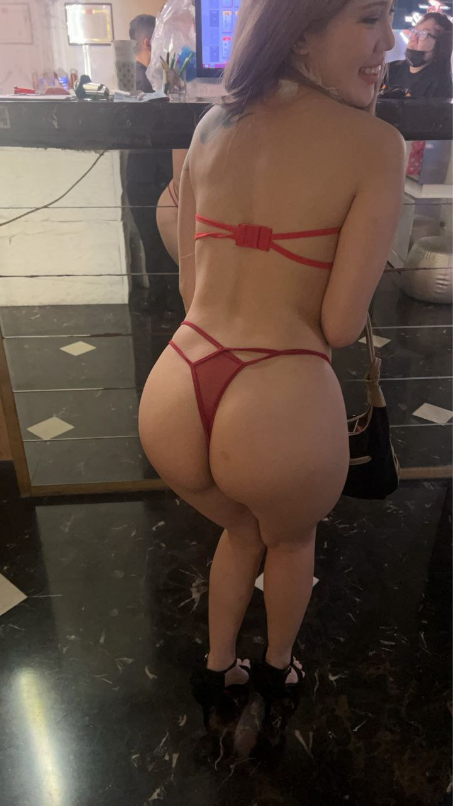
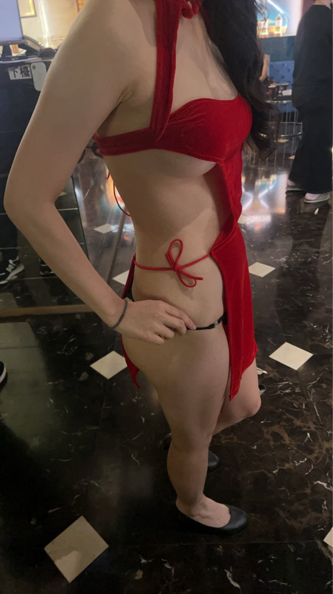

世盟百欣商務酒店適合什麼場合？
世盟百欣商務酒店可以優先考慮：第一次體驗台北制服店、三五好友下班放鬆、生日局或熱鬧聚會。適合想要熱鬧、輕鬆、朋友一起玩的人，也適合生日局、下班放鬆、第一次找林森北酒店或想知道台北制服店怎麼玩的人。世盟百欣商務酒店屬於制服店類型，適合先依「人數、時間、預算、想要熱鬧或安靜」來判斷是否合適。
世盟百欣商務酒店屬於較商務取向的制禮服店型，適合需要兼顧接待感與正式程度的客人。安排前建議確認是否為會員制或預約制。
世盟百欣商務酒店的定位可從「主題制服、熱鬧包廂、KTV 唱歌與朋友聚會。」來理解。若你正在比較台北制服店、台北禮服店、便服店或男模會館，建議先看同行客人的年齡層、場合與預算，再決定是否指定這間店。
安排這類店家時，最重要的是先把基本費用拆開看：包廂費、人頭費、服務費、檯費、酒水與加時。只要事前確認清楚，實際到場比較不會因為臨時加點或延長時間而超出預算。
如果是第一次預約世盟百欣商務酒店，建議先告知台北夜總會俞右：人數、抵達時間、預計停留多久、預算上限、喜歡熱鬧或安靜，以及是否需要慶生、商務接待或女生聚會的氛圍。
| 分類 | 制服店 |
|---|---|
| 區域 | 台北東區／忠孝復興商圈 |
| 地址／商圈 | 台北市大安區忠孝復興商圈 |
| 營業時間 | 晚間營業，請預約確認 |
| 包廂費估算 | NT$ 3,000 起 |
| 人頭費估算 | NT$ 500／人 |
| 服務費估算 | NT$ 1,000／包 |
| 檯費估算 | NT$ 2,500／60 分鐘 |
| 基本時間 | 120 分鐘起 |
依公開網路名單與消費資訊整理，實際營業狀態、價格與包廂安排以預約確認為準。
世盟百欣商務酒店可以優先考慮：第一次體驗台北制服店、三五好友下班放鬆、生日局或熱鬧聚會。適合想要熱鬧、輕鬆、朋友一起玩的人，也適合生日局、下班放鬆、第一次找林森北酒店或想知道台北制服店怎麼玩的人。世盟百欣商務酒店屬於制服店類型，適合先依「人數、時間、預算、想要熱鬧或安靜」來判斷是否合適。
世盟百欣商務酒店地點參考：台北東區／忠孝復興一帶；地址資訊：台北市大安區忠孝復興一帶。預約時先說明人數、抵達時間、預算、想要熱鬧或偏安靜、是否需要大包廂。
世盟百欣商務酒店特色重點：主題制服與視覺記憶點明顯、適合唱歌、喝酒、桌面遊戲與慶生、新手容易理解流程。公開資料描述為制禮服酒店，偏頂級商務客與會員預約制。世盟百欣商務酒店的消費通常會受到人數、停留時間、包廂大小、公關／男模人數、酒水、加時與付款方式影響。
制服店重視主題感、現場節奏與包廂氣氛，常見安排包含 KTV 唱歌、桌面遊戲、聊天互動、慶生與朋友聚會。相較禮服店，制服店通常更熱鬧、節奏更快，也比較適合第一次想體驗台北酒店文化的新手。
適合想要熱鬧、輕鬆、朋友一起玩的人，也適合生日局、下班放鬆、第一次找林森北酒店或想知道台北制服店怎麼玩的人。若同行成員喜歡活潑互動與主題造型，制服店通常比便服店更容易帶動氣氛。
預約時先說明人數、抵達時間、預算、想要熱鬧或偏安靜、是否需要大包廂。到店後建議先確認基本時間、檯費單位、包廂費、人頭費、服務費與酒水，避免加時或加點後超出預算。
世盟百欣商務酒店的消費通常會受到人數、停留時間、包廂大小、公關／男模人數、酒水、加時與付款方式影響。頁面試算採公開常見費用模型估算，正式金額以預約確認與現場規定為準。
主題制服與視覺記憶點明顯
適合唱歌、喝酒、桌面遊戲與慶生
新手容易理解流程
氣氛比商務型店家更直接
Media
整理店內氛圍、包廂、酒水、燈光與形象照片，預約前可以先感受店家風格與包廂質感。



Related

皇冠制服酒店在台北制服店搜尋中辨識度高，適合想把氣氛做滿、又希望消費流程清楚的新手與朋友局。店型重點是主題制服、包廂唱歌與較直接的互動節奏。

金聰制服酒店常被歸類為林森北制服店代表名單，適合想體驗傳統台北酒店包廂文化的客人。預約時可先確認當日包廂大小、公關安排與基本消費。

豪昇制服酒店主打熱鬧與聚會感，適合三五好友、慶生或第一次嘗試制服店的人。若重視預算控制，建議先用試算系統估算基本時間與人數。
Reservation
提供台北制服店、林森北酒店、台北禮服店、便服店與男模會館預約諮詢。請先提供日期、時間、人數、預算與偏好店型。